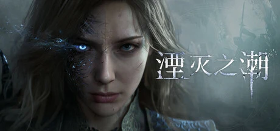

腾讯旗下日蚀边缘工作室开发的骑士幻想动作冒险 3A，取材亚瑟王传说、现实伦敦×异世界，女主角格雯德琳，对标《鬼泣》《猎天使魔女》高速战斗+《旺达与巨像》巨型 BOSS。
想象你睁开眼，现代伦敦已经碎成了废墟——摩天大楼扭曲成不该有的形状，地铁站、大英博物馆被一种叫「阿瓦隆」的异世界力量侵蚀，活物被异化成冰冷的无机物。你抬头，看见中世纪的亚瑟王骑士，正以幽灵的姿态显现在 21 世纪的天际线上。这是一场末世奇幻：油画般的光影泼在断壁上，镜面的倒影里是另一个世界，灰雾弥漫。而灾难过后，整座城里唯一活下来的人，是你——格雯德琳。
你觉醒了「灰雾」之力，能召唤、指挥圆桌骑士的幽灵并肩作战——冰、风、火，十几位骑士随你的连招切换、被你吸收进「共生状态」。你身边的妮妮安能在孩童、鸟、剑之间变形，她就是你手里那把会说话的剑。你要做三件几乎不可能的事：找回失散的姐姐、修复破碎的两个世界、向毁灭伦敦的阿瓦隆半神复仇。为此你得追着散落各处的圣杯碎片，一路撞上叛出圆桌的莫德雷德、九女巫黛萝这些强敌——还有那座高山般、能攀能爬也能杀你的巨像骑士。
可越往深处走，越难分清敌友与虚实：那些替你挡下攻击的圆桌骑士，是助力，还是终将反噬你的力量代价？镜子里那个和你战斗的世界，哪一边才是真的，你又困在了哪一边？而你拼命要找回的姐姐——当你终于穿过阿瓦隆，等着你的会是重逢，还是另一个更残忍的真相？这不是一个关于打得多华丽的故事，是一个关于「一个幸存者，愿意召唤多少亡魂、走进多少个碎裂的世界，去换回她仅剩的那个人」的故事——灰雾散尽之前，你分得清自己是在拯救世界，还是在拯救那一点私心吗？
「骑士幻想 × 现代废墟」，是把亚瑟王传说的中世纪奇幻和被侵蚀的现代伦敦撞进同一帧的美学。底子是写实的都市废墟——扭曲的摩天楼、异化成无机物的街景；变异在于圆桌骑士、圣杯与九女巫以幽灵姿态显现其间。视觉主打油画般的光影与镜面倒影的双世界母题。色彩以废墟灰雾冷调撞骑士元素之力的金蓝红为骨，整体宏大、诗意又压抑，是国产 3A 里少见的纯西方奇幻取向。
「高速动作 + 电影级 Boss 奇观」这套美学血脉清晰。2000 年代《鬼泣》定义了 Stylish Action 的连招美学，《猎天使魔女》（2009）把跑酷式大场面推向顶点——湮灭之潮的战斗正是这一脉，官方明确「受鬼泣启发而非魂类」。2005 年《旺达与巨像》用「攀爬巨型 Boss 即关卡」重定义了空间想象，成了这一作巨像骑士的母版。2018 年《战神》示范了如何把神话史诗做成电影级单人叙事。团队里有《如龙》《刺客信条》的老兵，赌的是国产 3A 走出中国题材舒适区的这一步。
基于体验清单 · 审美偏好 · IP故事三维度综合选出
点击链接跳转到对应平台查看 · 仅整理外部链接